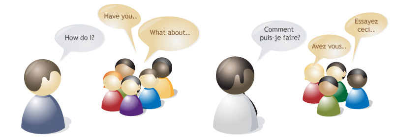

8 of 11
Community support

Free software thrives on people helping each other when the unexpected happens. Launchpad Answers helps your project’s community track support requests in multiple languages and create a searchable knowledge–base of answers.
Support in your language
Although most development and planning happens in English, people use free software in hundreds of languages.

Rather than ask people to describe their problem in an unfamiliar language, Launchpad lets them ask for help and get a reply also in their own language.
Track questions like bugs
Launchpad tracks help requests like bugs to increase the chances of getting a good answer.

Members of your community can volunteer to be support contacts – in effect your help triage team – and receive notification of all new questions in their chosen languages. Throughout the question’s life, the person looking for help and the people offering advice can set its status from unanswered to solved.
Knowledge–base and FAQs
All projects have their frequently asked questions.
Launchpad provides a repository for your community’s knowledge, which builds organically as people ask and answer questions.
When someone asks for help, Launchpad searches solved questions to find a likely answer. Similarly, when support contacts come across a frequently asked question they can select the best answer and make it available as a template for future use.